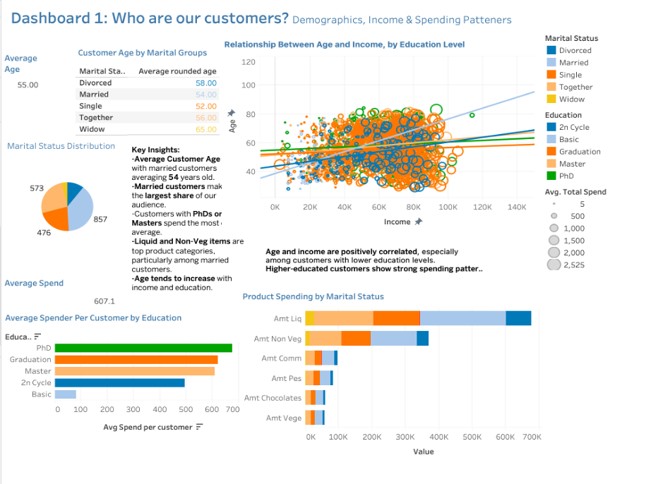
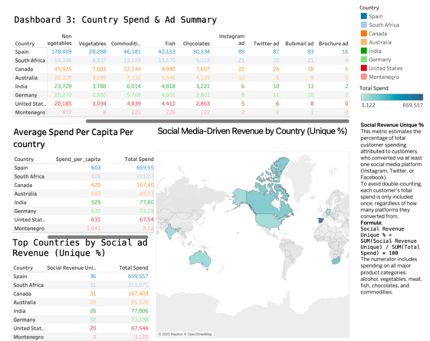

Project Overview
This project explores customer demographics, spending patterns, and advertising effectiveness using Excel, SQL, Tableau, and R. The goal was to uncover insights that help 2Market improve marketing strategy, product targeting, and customer segmentation.
3. Key Findings
Three interactive Tableau dashboards were developed to present key customer insights clearly and engagingly.
Demographics & Spending Patterns Dashboard Highlights
- The average customer age is approximately 55 years (44 years if considering 2014 as the base).
- Married individuals represent the largest segment, with ~857 customers (38.7%), followed by 'together' (573, 26%).
- There’s a positive correlation between age, income, and education.
- Master’s and PhD holders demonstrate the highest average spending.
- Liquor and non-vegetables are top product categories, especially among higher-educated and married customers.
The scatterplot illustrates income vs. age, segmented by education, with circle size showing average spend.
Figure 1: Demographics & Spending
High-income customers ($90K–$100K) are typically around 53 years old; single and divorced customers spend the most. Spending is strongly tied to education, with master’s holders leading. Surprisingly, 60% of purchases still occur in-store, even among this digitally engaged group—highlighting the value of in-store experiences. Instagram is the top-performing ad channel, appealing to this segment’s preference for visually rich content. SQL analysis also shows households without young kids spend more on premium products like liquor, chocolates, and meat, suggesting strong potential for Instagram-driven premium campaigns targeting older, high-income, educated customers.
Figure 2: High-Income Segment Analysis ($90K–$100K)

Dashboard 3 shows country-level customer spending, social ad response, and Unique % of Social Revenue (spending from customers who converted via at least one social platform):
- Spain leads with the highest total spend ($659,557) and Social Revenue Unique % (36%).
- Canada and South Africa follow with 31% each.
- Montenegro shows no social media conversions.
These insights help identify where social ads are most effective and guide future campaign targeting.
Figure 3: Country Spend & Ad Summary
